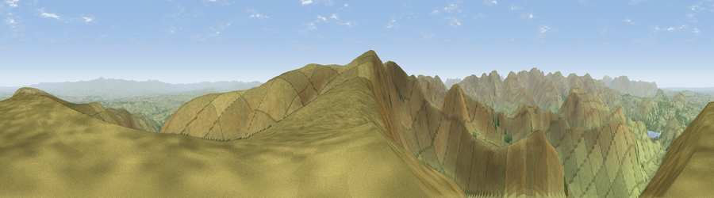

Red Crag
#1409 in England · top 8% of its area beats it · near PatterdaleThe view, rendered

A 360° render of this exact spot computed from the terrain model, tree cover and land cover — summer colours, afternoon light, calibrated against photographs of famous viewpoints. Real trees, hedges and buildings will differ in detail.
The panorama
Grey silhouette: terrain skyline in each direction (720 bearings, Earth curvature and refraction included). Dashed green: skyline with trees (+15 m) and buildings (+8 m) as obstacles. Blue strip: how far the ground is visible on each bearing.
Where the view opens
Wedge length = distance to the farthest visible ground on that bearing (vegetation-aware). Rings at 10, 25 and 50 km.
What fills the view
96% grassland · 3% woodland
Angular shares of the visible panorama (visual magnitude), not map area. Landscape diversity 0.08 (0–1 Shannon).
Key numbers
More beautiful places nearby
The staircase of upgrades: each row has a higher view potential than everything closer. Driving times are estimates from straight-line distance, calibrated against real road routing — check an actual route before setting out.
| Place | Direction | Drive | Score |
|---|---|---|---|
| Viewpoint c10274_6913 | SE · 1 km | ~4 min | 79.0 |
| High Raise | S · 2 km | ~5 min | 79.4 |
| Viewpoint near Bampton | ESE · 2 km | ~5 min | 80.4 |
| High Street (summit) | S · 4 km | ~9 min | 82.6 |
| Viewpoint near Watermillock | N · 6 km | ~12 min | 83.5 |
| Viewpoint near Legburthwaite | W · 11 km | ~21 min | 83.8 |
| Viewpoint near Legburthwaite | W · 12 km | ~22 min | 84.5 |
| Skiddaw South Top | NW · 23 km | ~38 min | 85.8 |
54.52887, -2.85088 · source: osm peak · position refined by local search. Computed location — check access rights before visiting.